sz81 is a Sinclair ZX80/ZX81 emulator at http://sz81.sourceforge.net, very much based on z81, but employing the highly portable Simple DirectMedia Layer and including additional functionality and features for desktop computers and portable devices.
Key features of sz81 are:
The present manual has been adapted from the original README and covers the latest version available here.
sz81 requires that Simple DirectMedia Layer (SDL) version 1.2 be installed.
With Ubuntu, to determine if SDL is installed run the following command:
dpkg -l | grep sdl
SDL is installed with the following command:
sudo apt install libsdl1.2-dev
sz81 also has a requirement for a C compiler. With Ubuntu, it may be preinstalled; otherwise it may be installed with:
sudo apt install build-essential
Linux: Copy the installation archive file to where you want the sz81 directory to reside. Extract the archive. Running "make" should create an executable called sz81. If there are issues, modify the "Makefile" to your needs. In short, here is the whole process:
tar -xvf sz81-2.3.10.tar.gz cd sz81-2.3.10 make ./sz81
If there is an issue with the compilation process, once the issue has been resolved, make sure to run:
make clean
before running the make command again.
Windows: Unzip the archive in a folder of your choice. The archive contains the required SDL.dll.
macOS: See https://drive.google.com/open?id=0B8RnV5G0TZFZRTlJbzdWemtkRm8
Other: Compiling the latest sources for the Amiga, Zaurus, and GP2X has not been attempted with the latest versions.
Back to topsz81 can be started from the command line or from a Desktop Shortcut. If creating a Desktop Shortcut, there are three .PNG files that can be used as icons for the Shortcut.
| Click screen | - | Toggle virtual keyboard and control bar |
| Backspace | - | Rubout i.e. equivalent to using SHIFT + 0 |
| Comma | - | Equivalent to using SHIFT + . |
| Cursors | - | Equivalent to using SHIFT + 5, 6, 7 and 8 |
| -/= | - | Decrease/increase the volume (if supported) |
| ALT + R | - | Cycle between 960x720, 640x480 and 320x240 |
| F11 | - | Toggle between fullscreen and a window |
| F9 | - | Activate the control remapper for remapping |
| - | joystick controls to keyboard controls | |
| PrtScn | - | Save a screenshot to the local scnsht folder |
| Pause | - | Place emulation on hold but not the GUI |
Clicking the screen (or F1) brings up the virtual keyboard and the control bar enabling access to several very useful features. If a joystick is detected, the "J" key will be highlighted.
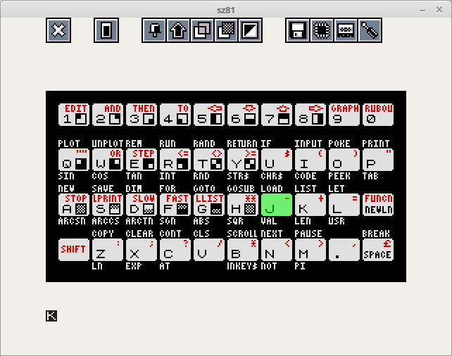The functions of the control bar are listed below alongside their keyboard equivalents:
| - | Exit emulator (F10) | |
| - | Reset emulator (F12) | |
| - | Toggle virtual keyboard between autohide and don't hide (F6) | |
| - | Toggle between sticky shift and toggle shift (F7) | |
| - | Reduce (HOME) or increase (END) virtual keyboard opacity | |
| - | Toggle between not inverse and inverse video (F8) | |
| - | Toggle the save state dialog if available (F4) | |
| 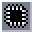 | - | Toggle the load state dialog if available (F5) |
| - | Toggle the load file dialog (F3) |
Every component has a green selector that can be moved around using the cursor keys or the joystick. The item currently selected can be activated with the Enter key, a joystick button (selector hit) or by clicking with the mouse. If you use the mouse then of course you are free to activate items directly and can ignore the selector. Page Up and Page Down (or joystick equivalents) will flip between pages and scroll through lists. The Escape key operates as you might expect: it closes the topmost dialog or component and will continue to do so until the emulator window is reached.
The F2 key toggles the runtime options which start with the options for the hardware. The defaults are as follows:
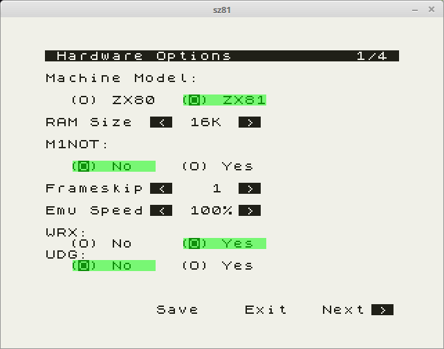Most likely, most settings are self-explanatory. "M1NOT" refers to the possibility of running machine code in the 32-48K part of the memory. The next page contains:
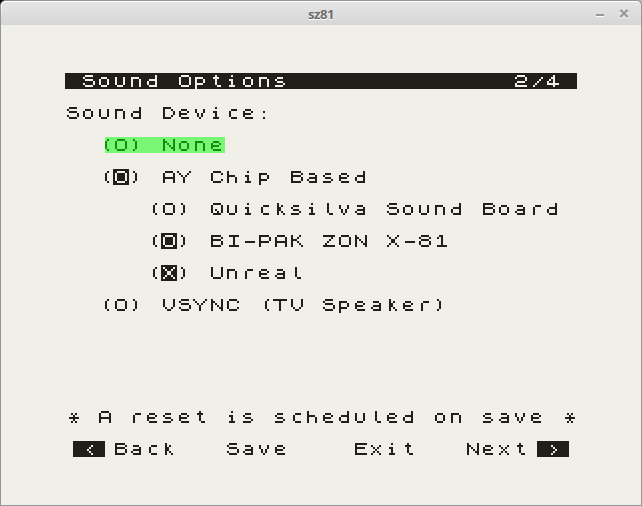where the AY Unreal sound emulation has been selected. Use "VSYNC" for the sound that the ZX80/81 normally produces. The next page contains:
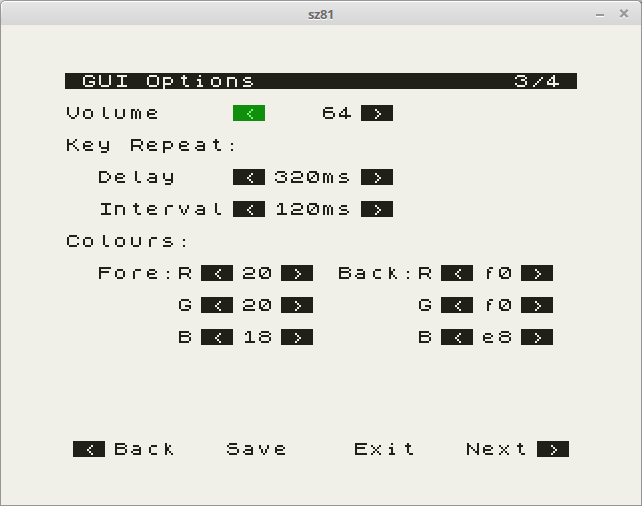Note that the volume of the sound may also be adjusted with the "-" and "=" keys.
Typing the ZX80's LOAD ("W", newline) or the ZX81's LOAD "" ("J", SHIFT + "P" twice, newline) will show the load file dialog. There is a much easier way to show the same dialog and that's via the control bar icon or the F3 key (joystick select) but there is a fundamental difference in the way that these two methods work that you should be made aware of: a machine reset will occur if you load a program file by directly activating the dialog but not if you activate it via the machine's LOAD command. For the most part this won't matter at all, but if you are intending to set-up RAMTOP, load a program above it before loading another program then you will lose everything if you load a program by invoking the dialog directly.
If you have an understanding of the ZX81 then you will know that it is possible to load a program by executing LOAD "PROG" in which case sz81's loading mechanism will search for prog.p or PROG.P within the last directory navigated to, or if you've yet to navigate anywhere then the start-up folder. If you'd like to load an .81 file instead then the .p extension can be overridden by appending an .81 suffix e.g LOAD "PROG.81".
There are some additional ways to navigate and utilise the load file dialog that enhance its operability: directories can be opened and programs loaded with a single mouse or stylus click, the scrollbar is interactive and the list can be scrolled using a mouse wheel. It is also possible to select an item by typing its initial letter or number and then cycling to subsequent items with repeated presses.
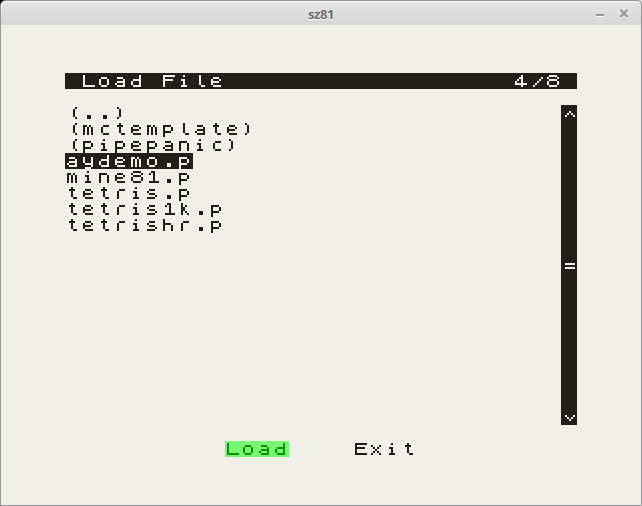On the ZX80 saving is achieved by executing SAVE ("E", newline), but since there is no way to pass a filename and indeed no native sz81 save file dialog either, a choice of two naming methods have been made available: the first and default method is to save the program into the last folder navigated to with the load file dialog (or the start-up directory) with a sequential filename e.g. zx80prog0123.o. The second funkier method is to embed a BASIC line somewhere within the program e.g. 9999 REM SAVE "PROG". The line number used is not important, but the use of the SAVE keyword is so you'll need to type 9999 SAVE "PROG" and then move the cursor back before SAVE and add a REM. When the program is saved by executing SAVE, sz81's program saving mechanism will look for this embedded BASIC REM statement and extract the filename. The default .o extension can be overridden by appending a .80 suffix. Please note that if you are using a version of sz81 that's been ported to a non *nix platform, these filenaming methods may have been replaced with a save dialog native to your OS.
With the commands
SAVE "FILE;ADDRESS,length"
LOAD "FILE;ADDRESS"
data at the specified location and length can be saved to or loaded from a file. These work with and without ZXpand emulation.
sz81 supports the saving and later reloading of images that are most commonly known as save state files. They are simply files containing dumps of the emulated machine's memory and the emulator's variables to enable a program to be restored to the same state at some other point in the future. So, after loading a game and playing the first level or two you find that your lunch break is over and you'd like to save your current position within the game to continue with later when distraction beckons - simply activate the save state dialog by pressing F4 or selecting it from the control bar and choose a slot. Slots that are inverse have an existing state already stored there (from the same program) so either choose a new slot or overwrite an existing one. This can be achieved by clicking a slot with the mouse or stylus, moving the selector and pressing enter (selector hit) or pressing a number from 1 to 9.
Loading a save state file requires that the original game is loaded first and then the load state dialog can be activated with F5 or via the control bar. Then simply choose one of the previous slots that you've saved to and away you go.
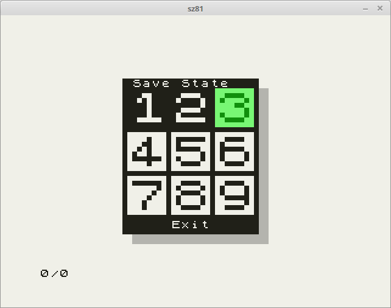If you have a digital or analogue joystick plugged in and you'd like to use it then open the runtime options (F2 from within the emulator or select the control bar icon) and employ the joystick configurator using either the cursor keys and enter, the mouse or stylus or the joystick once configured. Select a control on the graphical joystick representation (the selector will blink) and follow the instructions configuring as many of the controls as you possibly can for optimum usability. By default, the 'J' key is selected if the joystick has been detected.
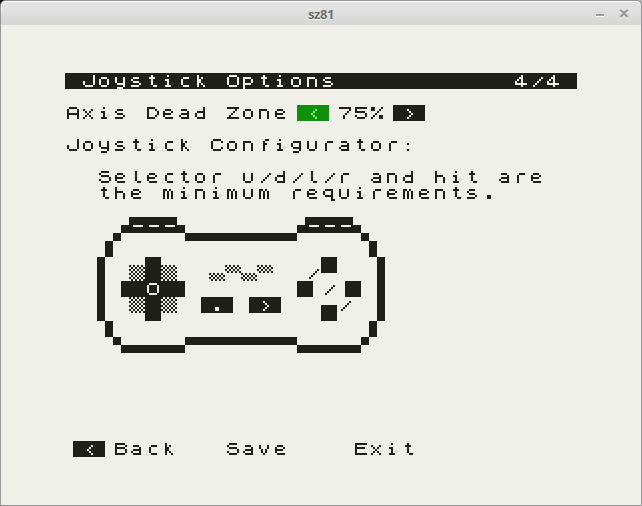With the virtual keyboard and control bar visible, position the selector over the function that you'd like to assign to a joystick control and press the control remapper (the selector will blink). Then press a joystick control to remap the function to the control. Existing controls that have been remapped are active within the emulator (you cannot remap GUI controls) whilst new controls are universally active. It is possible to include the SHIFT modifier within the control as long as it is active before you initiate remapping. To cancel remapping press the control remapper again.
In the users home directory is a .sz81 directory. This directory contains local information on sz81, including the configuration file and the prtout directory.
Emulated printer output is currently written to sequentially named pbm image files stored within the local prtout directory in the .sz81 directory. A new file is created when either of the ZX81's LLIST, LPRINT, or COPY commands are used and then closed when the emulator is reset or sz81 exited.
Located within the .sz81 directory is the auto-generated configuration file sz81rc (or sz81.ini). It is possible to tweak sz81's operation by editing the contents of this file but the majority of people will leave it as is. Right at the top is show_input_id which can be set to TRUE to show input device id's (SDL_keysym's) which is useful if you are configuring an input device and would like to know the id's of the buttons. Additionally the entire control set is stored within this file and controls can be edited, added or removed. For example there is no print screen (SDLK_PRINT) key on a handheld device with no keyboard and so by default the user cannot take screenshots, but if they have a spare input button and they know its id then they can by adding the following ctrl_remap:
ctrl_remap.components=COMP_ALL
ctrl_remap.protected=TRUE
ctrl_remap.device=DEVICE_JOYSTICK // or DEVICE_KEYBOARD
ctrl_remap.id=19 // 19 is an example
ctrl_remap.remap_device=DEVICE_KEYBOARD
ctrl_remap.remap_id=SDLK_PRINT
ctrl_remap.remap_mod_id=
Simply put, this ctrl_remap is active across all program components, protected from being modified by the control remapper, will cause the joystick button with the id of 19 to be intercepted and a PrtScn keyboard key event generated in its place. remap_mod_id can be used to generate an additional event and this is how backspace generates SHIFT + 0 within the emulator. I recommend looking at sdl_input.c and sdl_input.h to understand this system in more detail.
Upon exiting, if you have modified any of the configurable options you will be presented with a dialog requesting that you confirm writing the changes to the configuration file (sz81rc, sz81.ini). If you choose "No" then the changes will be discarded. This is useful for when you have configured the emulator just how you like it and don't wish to disturb it with unimportant modifications.
Back to topTyping "sz81 -h" in a terminal or command line window gives the following usage options:
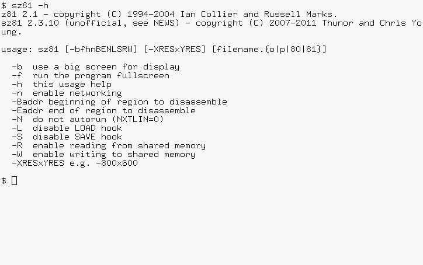Messages about networking, detecting the joystick, loading and saving files, creating printer images, and screenshots are also displayed in the console. Some further information about the options:
| -b | Like EightyOne's Full Frame |
| -f | Full screen |
| -n | Enable networking (see ZeddyNet Emulation) |
| -Baddr | Start address of disassembling |
| -Eaddr | End address of disassembling |
| -N | Disable autorun of programs |
| -L, -S | These disable the GUI for LOADing and SAVEing files; instead the original ROM routines are used. If the Sound Device is configured to "VSYNC", the original sound of saving a program will be created, and can be stored on a recorder. However, loading it is not supported. The options are also useful if other ROMs than those of the ZX80 and ZX81 are used. |
| -R, -W | Enable the HS-4 system |
| -XRESxYRES | Run with the specified resolution |
First, the capability to display high resolution was added. Because it didn't always work correctly, the display and Z80 routines were replaced by those of EightyOne. Next, sound didn't work properly. To solve this, the display routines were completely rewritten, also with the aim that these three programs and 25thanni would work correctly (in EightyOne, with View, Border Size, Full Frame, the letters of the text are falling down in the bottom left corner). In the meantime, other features were added that are briefly described below.
Back to topFrom http://www.fruitcake.plus.com/Sinclair/ZX81/Chroma/ChromaInterface.htm: "The Chroma 81 interface is a multi-purpose peripheral for the ZX81. Its primary function is to allow the ZX81 to be connected to a TV via a SCART socket to produce an RGB picture that is sharp and bright." Its emulation is enabled by default if there is enough RAM (see Hardware Options).
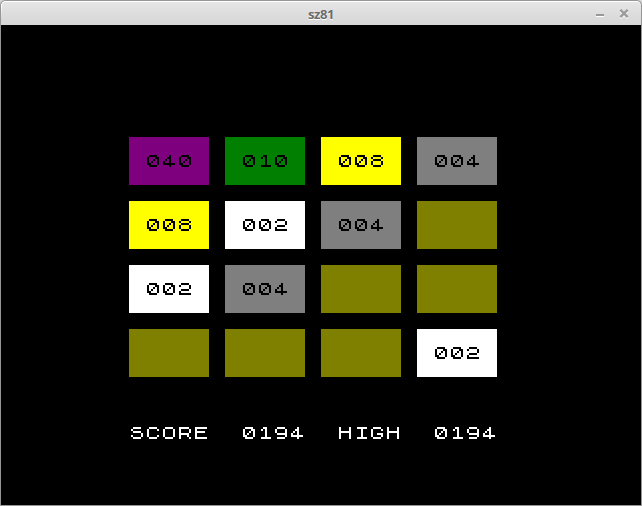The program displayed here may be found here.
Back to topZeddyNet adds a network interface to the ZX81 using the WIZnet 5100 chip. At this page http://forum.tlienhard.com/phpBB3/viewtopic.php?t=1616, a lot of ZeddyNet software may be found. For example this page may be viewed with the web browser "ZeddyFox":
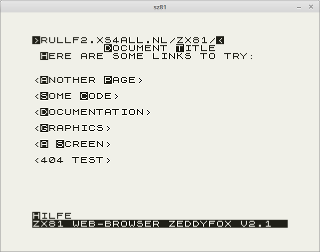The networking code is enabled with the command line option "-n", and configures itself ("IPCONFIG" is not needed). To mount a TNFS server, the program "NFM" may be used.
Back to topZXpand is a hardware add-on for the ZX81 that provides an SD Card, 32K RAM, and routines to save and load programs from the SD card. A number of BASIC commands have been changed to add CAT, DELETE, and CONFIG commands.
For example, this adventure game: In Nihilum Reverteris needs high resolution, AY sound, and ZXpand emulation. The latter needs a version of sz81 compiled with this emulation feature enabled. Files may be stored in the "ZXpand_SD_Card" directory near the sz81 installation directory.
Back to topZXmore is a new single board computer that behaves like a ZX80, ZX81 and ZX Spectrum. ZXNU is another single board computer that behaves like a ZX80 or ZX81. These hardware clones can be partly emulated. Modify the Makefile to enable it and/or contact the sz81 maintainer for further information.
Back to top